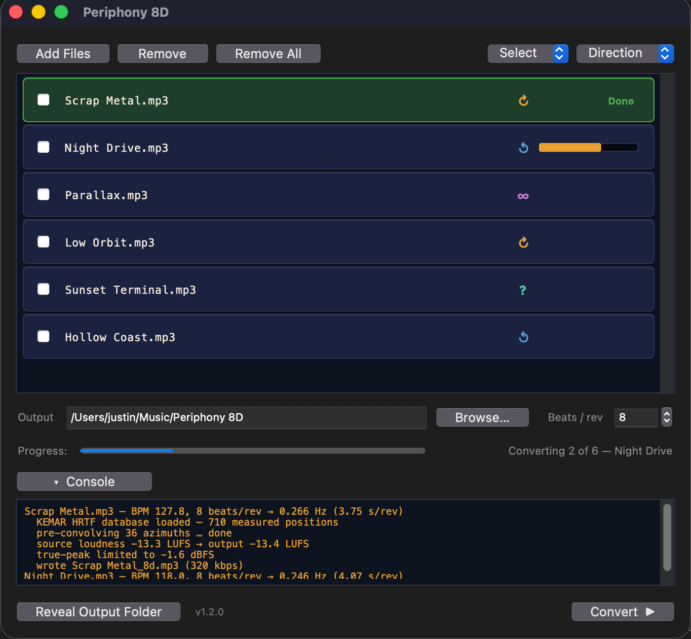
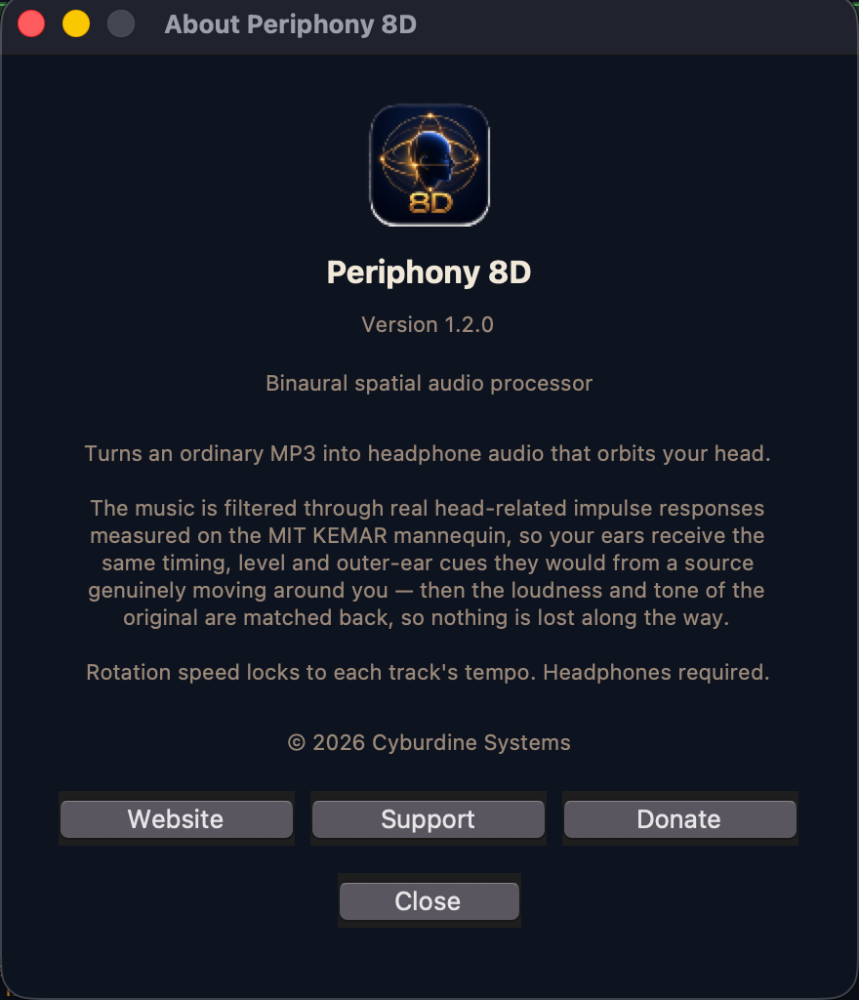

Press play. Then press 8D.
Both are playing already, in sync and at the same loudness. The only difference you'll hear is that one of them is moving.
Put headphones on — the effect does not exist on speakers.
SCRAP METAL · 127.8 BPM · ONE REVOLUTION EVERY 3.75 S
What it is
A macOS app that does that to your own music.
Drop MP3s in, press convert, get files back. The rotation is built from head-related impulse responses measured on a mannequin head at MIT — not from a stereo widener, and not from an equation.
Real ears, really measured
Your track is convolved at 36 azimuths — one every 10° — and crossfaded between neighbours sample by sample, so the source glides instead of stepping.
One orbit, eight beats
Each track's tempo is detected and the rotation locked to it, so the movement lands with the music. Adjustable from 4 to 64 beats per orbit.
Not just left and right
Bass below 150 Hz stays centred. Above it, the room response tightens in front and lengthens behind — the depth cue that stops it collapsing into panning.
| Measurement | Original | Periphony 8D |
|---|---|---|
| Integrated loudness | −13.3 LUFS | −13.4 LUFS |
| Worst tonal deviation | — | +2.6 dB |
| Centre channel | −15.1 dB | −16.8 dB |
| L/R correlation | +0.91 | +0.57 |
| Stereo width (S−M) | −13.3 dB | −5.6 dB |
The app
Drop files in. Press convert.
Runs entirely on your machine. No account, no telemetry, no subscription. Output is 320 kbps MP3.


Download
Free. One email, one click.
We send a confirmation link; clicking it starts the download. The address is used for that link and nothing else.
- Confirm your email. Click the link we send. The download begins straight after.
- Open it the first time with a right-click. Right-click the app and choose Open, then confirm. macOS warns because the app isn't signed by a paid developer account — expected, and only once.
- Put headphones on. The effect is built from the difference between your two ears. Speakers destroy it.
MACOS 12 OR LATER · APPLE SILICON · MP3 IN, 320 KBPS MP3 OUT
VERSION 1.2.0 · RUNS ENTIRELY OFFLINE